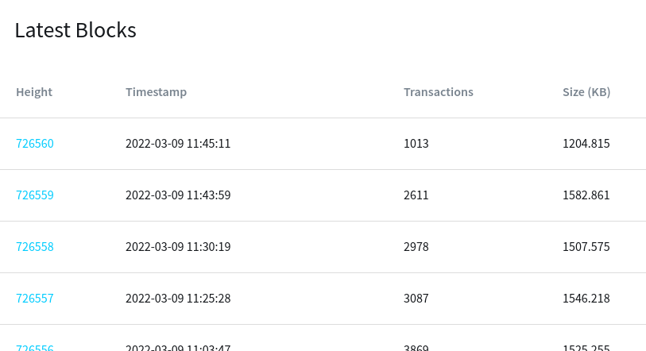
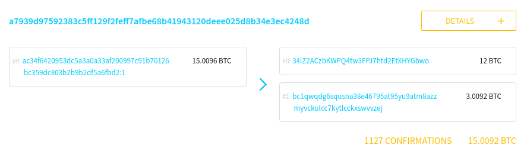
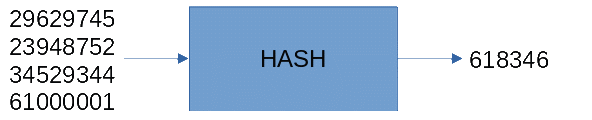
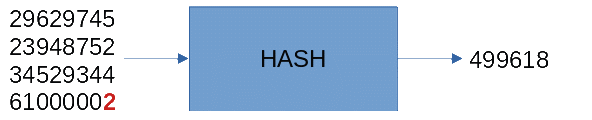
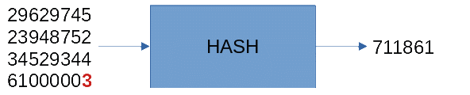
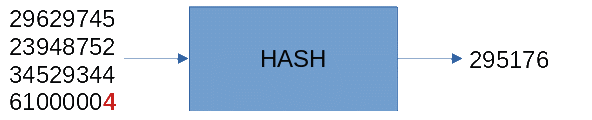
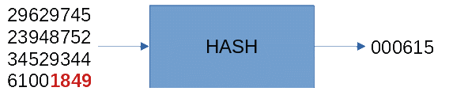
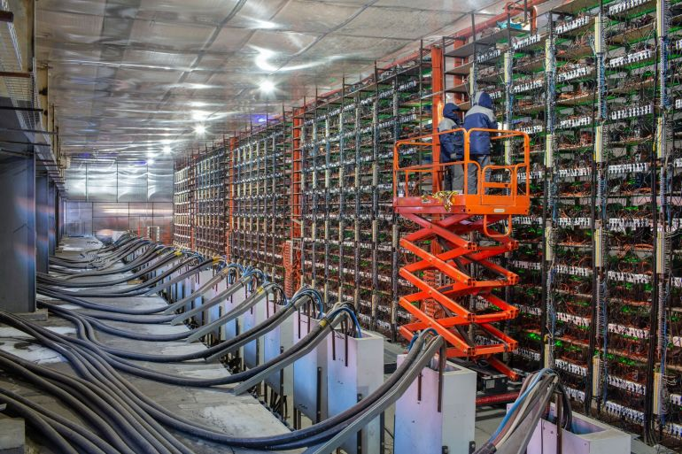
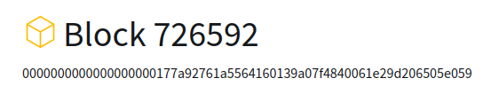
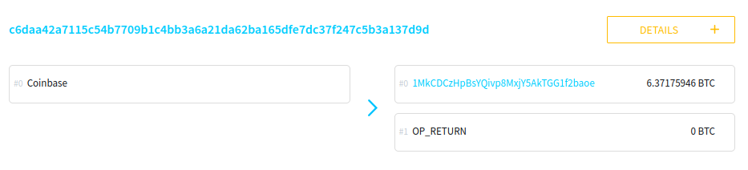

Learn Bitcoin
This document is intended as a complete introduction to anyone who is interested in learning about bitcoin. It covers:
what bitcoin is
spoiler: it’s just a list of transactions
why I think bitcoin is important
the government can’t stop you using or owning it
how bitcoin actually works
what’s in transactions and how they get added to the list
where new bitcoins come from
why it’s basically impossible to cheat
how to get started with bitcoin
getting a wallet, receiving and sending transactions
how to look after your bitcoin
hardware wallets
securely storing your wallet seed
It's quite long but it should be all you need!
!!! WARNING !!!
The whole point of owning and using bitcoin is: you are responsible.
Bitcoin exists independently of companies, governments or other institutions. It cannot be regulated or controlled. This is an important part of why it's so revolutionary but it also means that if you do things wrong, there is nobody official to call. There are no helplines or compensation schemes and you cannot reverse transactions. So it's very important to proceed cautiously, and patiently. Always be sceptical of what anyone tells you. There are a lot of bad actors out there - if you google "buy" bitcoin most results will probably be scams. You need to satisfy yourself that what you are doing is right, rather than purely taking someone else's word for it (including me!).
Because of the personal responsibility it entails, I think an important aspect of using or owning bitcoin is to understand it sufficiently well that you can have confidence in your actions. That might sound daunting but it is actually surprisingly easy. Even though bitcoin is a complete monetary system (and more) its mechanics are actually relatively simple - far simpler than a bank account. I don't mean that you need to learn the whole thing before you start, but I do think it's important to approach it with a mind that is open to understanding what is going on, rather than just following instructions someone has given you.
Bitcoin is essentially a list of transactions, known as "the blockchain", which is maintained and synced across a network of hundreds of thousands of computers across the world. Anyone can send bitcoin to anyone else simply by adding a valid transaction to this list.
Suppose I want to send you 0.3 bitcoin - perhaps as payment for a car you have agreed to sell to me. I will use an app (aka a “wallet”) to generate the appropriate transaction and broadcast it over the internet to computer on the bitcoin network for addition to the blockchain.
The components of a transaction are similar to the components of a cheque (if you are old enough to remember them). In our example the transaction will include:
AMOUNT: how much is being sent - in this case, 0.3 bitcoin.
TO: a destination address that you have provided. An address in bitcoin is a string of letters and digits that represents a large number. An example of an address is:
bc1qs7rq26rp3zwc63nvq9jctr8eqh
FROM: a reference to a previous transaction or transactions in which 0.3 bitcoin or more was sent to an address I control. This is the source of the bitcoin I will be sending to you.. ..which someone else previously sent to me.
SIGNED: a digital signature which proves that I control the relevant address which has the 0.3 bitcoin.
After I've given it your address and told it how much to send, my app will automatically compose the transaction and broadcast it. As long as it's valid, it will be added to the blockchain for all to see. You now own the 0.3 bitcoins, because you control the address they were sent to - only you can make the right digital signature to send them elsewhere in a subsequent transaction. You can hand me the car keys and we are done..
That's pretty much it! The bitcoin blockchain is literally a list of transactions just like this. Kind of amazingly, that is actually all you need.
It's like if you were playing cards with friends but didn't have money to hand - so you use a pen and paper to keep a tally. At the end of each hand you record who lost lost how much $ or £ to whom. The record you write down would be all you needed to tell who had what.
The main difference is that with bitcoin the record is set up so anyone in the world can use it - not just friends who trust each other - because it's essentially impossible to cheat, eg by making a fake entry, or changing an entry that was made before. The impossibility of cheating is an important reason why bitcoin can have real value, while a piece of paper you and your friends use to keep score of a card game cannot.
Congratulations, you now understand bitcoin at its most fundamental level. It's a list of transactions that can't be corrupted, nothing more, nothing less. Everything else you hear about, all the apparent complication and unfamiliar aspects of bitcoin - things like blocks, mining, seeds etc - are really just details. Most of them are just ways of making the list secure.
Though there is one "detail" which stands out above all others and is worth mentioning here, because its implications are significant. New bitcoins are created according to a fixed schedule. About 19 million have been created at the time of writing but there will never be more than 21 million.
I think there are two fundamental characteristics of bitcoin which mean it is going to change the world forever.
It is impossible to prevent anyone from sending, receiving or owning bitcoin (or at least it's as difficult as it can possibly be). Anyone can broadcast transactions to the bitcoin blockchain. You don't even need internet, you can do this by radio. Anyone can view the blockchain to check if they received a transaction (eg if they were being paid in bitcoin for some item or service). Anyone can own bitcoin by holding the "key" required to sign transactions from a bitcoin address, and if managed properly bitcoin keys cannot be taken from you. This all means bitcoin cannot be controlled or regulated by governments. I think that means in the end it will supercede governments, in many important ways - as it allows economic systems to be built that they cannot control.
Bitcoin is the first asset in human history with fixed supply. The bitcoin protocol ensures only 21m bitcoins will ever be issued (and ~19m have been already). Everything else you can buy or use as a savings vehicle - gold, stocks, bonds, tulips - ultimately will increase in supply if the price increases, so keeping the price anchored to some economic or physical reality. With bitcoin there is no such reality, no such anchor. It is a pure speculative asset - like a "bubble" but with nothing to pop it. The implications of this are huge - not just for the price, but for what it may do to the whole global economy if / when everyone cottons on.
These sound pretty simple, but it took me many years of being interested in bitcoin to properly understand how significant they are. I now think it's more likely than not that a new global economy will be built based on bitcoin - and that, for better or worse, the economic power in the world will reside with those who own it.
Recent events in which Canadian truckers protesting against vaccine mandates had their bank accounts frozen, and charitable donations intended for them were intercepted, show clearly the need for a free system of monetary transfer. For example, if you have a trucker's bitcoin address it is essentially impossible to stop you from sending bitcoin to them. There is no central company or bank to pressure to confiscate funds. The transaction is encrypted in transit and cannot be intercepted.
It is also becoming plain that the major governments of the world intend to introduce their own digital currencies. Under these schemes all accounts would be held directly with the central bank - which of course is a branch of government. Every transaction will not just be fully tracked by government, it will literally be made by the government on your behalf – and at their discretion. This gives them full veto over all economic activity - for example future lockdowns could be enforced by simply preventing you from spending outside your local area. Cash would be abolished and alternative means of exchange banned. All balances will be held at the discretion of the government and could be arbitrarily changed to implement their policies.
Government will encompass and control the whole economy. Even if they were to begin with good intentions it is inconceivable to me that they could resist pressure from vested interests to abuse and exploit this power. In this future scenario, which seems to me fairly certain to arrive fairly soon, any meaningful ambition for freedom outside this totalitarian control will be dependent on finding alternative means to conduct economic life.
This is exactly the purpose for which bitcoin was designed, and which I believe it can fulfil. It really is the only hope for civilization, in my opinion.
In principle you don't need to know any more about bitcoin to understand its importance, beyond the fact that it is a list of transactions which can't be corrupted.
But in practice, before going further I strongly recommend learning how the system actually works - at least at a level which will allow you to confidently take responsibility for your actions when using it. This section explains all you will ever need to know, I think, about how bitcoin works.
The best way to approach this is by looking at the actual system - the transaction list itself - for real, in live action.
But first there is one practical detail you need to know. Rather than being added to the list individually, new transactions are grouped into a batch, or "block", which is added to the list in one go. That's why the list is known as a "blockchain". As with most aspects of bitcoin, the reason for grouping transactions in blocks is to do with preventing cheating. Right now it's not important to know why, but its a great example of how everything about bitcoin's design beyond the simple list of transactions is just a way to stop cheating.
There are plenty of sites that let you look directly at the blockchain. They are all interfaces behind which is a computer, connected to the bitcoin network, which maintains an active copy of the blockchain. One example is www.blockstream.info. It should look something like this:

As you might have expected, its a list of blocks. Each block has a number (or "height") showing its position in the chain, as well as a date, number of transactions etc (don't worry about "weight").
Clicking on a block will show you more summary info, and then the list of transactions it contains. They may look complicated at first sight - but it's actually almost all just as described above. Here's a typical example:

At the top is the "transaction ID" (a793...). This is a unique identifier for this transaction that can be referred to later.
Below, and to the left of the arrow, is another transaction ID (ac34...). This refers to a previous transaction that sent 15.0096 BTC to an address (which is not shown). This is the source of funds for the current transaction.
On the right of the arrow there are two destination addresses, each receiving a different amount (12 and 3.0092 BTC).
This makes sense when you consider that whoever made this transaction didn't want to send exactly the amount received in the previous one. So this transaction splits the incoming amount between two addresses: one of these will likely be owned by recipient of the transaction. The second address is a way for the sender to return the "change" back to themselves. We can't tell which is which but it seems likely that this person wanted to send 12 BTC to someone else, and the remainder is the change which went back to an address they control.
So, transactions can have multiple outputs. If you scroll around you'll also see transactions with multiple inputs. Again this makes sense if someone wants to send more bitcoin than they received in a single previous transaction. Eg if they previously received transactions for 3 and 5 bitcoin, but want to send 7.
By the way don't worry, you never have to deal with any of this stuff when using bitcoin - your wallet app will do it all for you! This is just to help you see that what is going on in the blockchain makes sense.
At this point you may have spotted a couple of gaps in the explanation of this transaction:
why doesn't the input amount (15.00096) exactly equal the output amount (12 + 3.00092)? What happened to the missing 0.00004 BTC?
if transactions always need bitcoins that come from a previous transaction, then where do thebitcoins come from originally?
The answer to these questions lies in the way bitcoin blocks are made – which is explained in the next section. This is easily the most difficult part of bitcoin to understand. But it’s still not that hard, and its worth taking a little time to understand. Don’t worry if you don’t get it straight away – the explanation will still be here if you come back to it and it’s never going to change!
In the above example where I sent you 0.3 bitcoin my wallet app would initially compose the transaction, adding the required amounts and digital signatures etc, and then send it over the internet to a computer that's connected to the bitcoin network (like the one behind the website). That computer will then send it around to the rest of the network.
But the transaction is not yet included in the blockchain, and it can't be regarded as finalized.
As we saw, transactions are grouped into blocks before being added to the blockchain. This process is known as "mining", for reasons that will become apparent.
People who do this (aka “miners”) continuously monitor the bitcoin network for new transactions, and assemble them in prototype blocks – lists of transactions with a few bits of additional data - ready to be added to the blockchain. But before they can be added the miner must first perform an important task.
To be accepted as a valid, the miner must put the block through a hash function. Remember, to a computer everything is a number – zeroes and ones. A hash function is a mathematical formula which takes in any data or number and spits out a number that is derived from it - often referred to as a fingerprint.
Importantly, the fingerprint for any given input appears completely unrelated to the input number itself - and even the tiniest change in the input number will give a completely different fingerprint.
Here’s a made-up example of what it looks like.

On the left is a bunch of data (really just a big numer). On the right is the fingerprint. Now lets change the input very slightly.

The point here is that the fingerprint changes completely (and in a completely unpredictable way).
Now here’s the key point: to make a valid block, its fingerprint number must be less than a certain target number.
The hash function used in bitcoin gives a long fingerprint output. But to show what's going on, lets keep using the simpler example above – what happens it’s exactly the same.
Suppose in this made up example the miner needs a number under 1000 to make a valid block, according to the rules of bitcoin.
Because the output of the hash function cannot be predicted, the only way to do this is to continue making slight changes to the input, and trying again until the target is met. So there is no way to avoid doing simple brute-force repetitions - which requires computing resources that come at a cost.



So in this made up example the miner needed to make 1849 attempts, slightly changing the input each time, before getting a hash fingerprint that got under the target.
Things are considerably more difficult in the real bitcoin network: at the time of writing it takes on average 27,967,152,532,434 attempts to get a fingerprint that meets the target! Bitcoin miners use huge warehouses of specialist computers designed specifically for this single task of repeated hashing. And the amount of computing power devoted to this far exceeds the total power of the world's top 500 supercomputers combined.

When a miner succeeds in getting the fingerprint of a block of transactions to meet the target, they finalize the block and send it out to the rest of the network. Even though it may have taken huge resources to get a block to meet the target, it is extremely easy for everyone else on the network to check that it is valid. So the computers holding copies of the blockchain all know they can add the new block - and the transactions within it become finalized.
The target that miners have to reach to make a block - known as the "difficulty" - is calibrated to ensure that on average a new block is found every 10 minutes.
If you look at a block, you will see it’s fingerprint, or “hash” – eg:

The string of digits and letters is actually a very big number (represented in base 16) that is the fingerprint, or “hash” of the block – i.e. the output you get when you put together all the transactions in a block, plus some extra data just to be able to change things, and run it through bitcoin’s hash function.
A random fingerprint will likely have none of those leading zeroes – they give an indication of just how low the target is.
Why would miners incur the tremendous expense of all this computing power? To make money, of course!
When a miner succeeds in making a block they are entitled to two forms of reward.
The first of these is the creation of new bitcoins. The rules of bitcoin allow a successful miner to add a transaction for 6.25 BTC to an address of their choosing.
This special transaction is often referred to as the "coinbase" transaction (not to be confused with the company of that name). It is usually shown as the first transaction in the block:

(don't worry about the "OP_RETURN")
So this answers the first of the questions above: where do bitcoins originally come from. They are all created in the mining of new blocks.
When bitcoin started, on 3rd January 2009, the addition of each block resulted in the creation of 50 new bitcoins. Every 4 years or so (after a set number of blocks) the amount of new bitcoins created per block falls by half.
At the time of writing we have had 3 halvings so each block generates 6.25 new bitcoin. In a few years that will drop to 3.125 and so on.
This pattern will continue until around the year 2140 when the last ever fraction of a bitcoin will be mined - and the total in existence will be 21 million.
I said the amount of new bitcoin created per block was 6.25, but the example showed a miner's transaction of 6.37 BTC.
And we still have to explain why the transaction outputs in our example were 0.00004 BTC less than the inputs.
The explanation for both these anomalies is transaction fees. Each transaction comes with a variable fee, set by the sender, that appears as the difference between the inputs and outputs. The miner is allowed to add all the fees to the transaction they make to themselves for mining the block. So in the example transaction above, the sender chose to add a fee of 0.00004 BTC. And the example miner transaction shows that the total of fees across the block was 0.12 BTC.
Its obvious why miners collect these fees. But why do senders of transactions voluntarily offer them? To provide an incentive for the miner to include their transaction in a block.
For reasons of security (of course) there is a limit to the number of transactions that can be included in each block. (Actually its not a number limit but a size limit - as transactions can involve varying amounts of data, for example if they have a large number of inputs or outputs).
For much of bitcoin's history the limit was not relevant because the amount of transactions being made was a lot less than the quantity allowed per block. People would usually add the smallest possible fee (1 satoshi, which is 1 / 100,000,000 of a bitcoin) to make sure their transaction was picked up. But in several recent periods space in blocks has been a limitation - and it becomes necessary to pay a higher fee to make sure a transaction gets selected by a miner for inclusion in a block. Wallet apps will usually propose the fee level required, often with different expected times that it will take for the transaction to be included. But it's worth being aware of this aspect of transactions when making your own.
You can see the queue of new transactions waiting to be included in a block here. Transactions are ordered by the amount of fee they are offering given their size (the site refers to "weight" but this effectively means size). Its worth having a look at this site to see if you can understand it - as it provides a useful insight into the working of the system. For example, can you work out why the graph has a saw-toothed shape?
The process of mining, with its mind-boggling number of repeated pointless calculations, may seem gratuitously laborious and energy-intensive. And that's deliberate.
It means that anyone who wants to create a valid block has no alternative but to go through the same process, and incur the same costs. When a user sees a block has been incorporated, they know it is, in effect, backed by the energy required to generate it. This requirement is known as proof of work, and it is fundamental to bitcoin's security and existence.
To see why, suppose a bad actor decides they want to cheat and rewrite history - for example to erase a payment they made to someone else. They will need to remake a new block, but with the relevant transaction deleted. However recall that even the tiniest change to the input to the hash function will completely change the result - so the attacker will have to redo all that work to get a new solution that meets the target.
What's worse for the attacker, the fingerprint of each block is included in the next one – so that will also have to be remade, along with any others that have subsequently been added. Meanwhile the rest of the bitcoin system is still adding a block every 10 minutes - all of which must themselves be remade if the attack is to succeed.
The result of all this is that anyone who wants to cheat needs to have a significantly more computing power than everyone else put together. Not only would this incur tremendous cost (and, in practice, an enormous secret chip manufacturing programme!), but that amount of power would make far more by mining honestly than by cheating.
Just to be clear: you don’t have to mine to use bitcoin!
This section describes how to get up and running with bitcoin, by using a wallet app to make transactions.
Making transactions is probably all you will ever "do" with bitcoin. It’s really very simple, but its important to recognise that the way you approach things will depend on how much money you are using.
If you are just moving a few dollars’ worth you might go through the process quickly without much thought – and it’s almost certainly going to be fine. But there may come a time when you are sending a life-changing amount of money, and in those situations you are going to want to absolutely check everything many times over! The guide below will point out the main things you are going to want to check in those situations – even though you might not always do so.
By now you will hopefully have got the message that bitcoin is all about transactions! So to start using bitcoin we need a way to receive and send bitcoin transactions. That means using a wallet app - a piece of software which:
Generates addresses that allow you to receive bitcoin
Stores the credentials that control those addresses (aka private keys)
Generates and broadcasts new transactions when you want to send bitcoin - including the all-important digital signature that proves you control the addresses associated with the bitcoin you are sending
There are thousands of wallet apps available. Many are outright scams - even on "trusted" platforms like app stores. So it's vital you do whatever research is necessary to get confidence that the wallet you use is legit.
For trying bitcoin out, making everyday transactions and storing small amounts a phone wallet is fine. I currently recommend Simple Bitcoin Wallet or BlueWallet, both of which are available on iOS and Android. If you are using a desktop computer a wallet Electrum and Sparrow are good - and they let you see a bit more detail of what is going on. As we’ll see below, for storing large amounts of bitcoin a dedicated hardware wallet such as Coldcard, Trezor, or Ledger is probably a good idea and these may come with their own wallet apps.
Make sure you are installing the legit version of the software - it's not unknown for close fakes to get onto the app stores and steal funds.
The following instructions are not specific to a particular wallet. But the wallets all do exactly the same thing, so what follows should apply whatever wallet you have chosen. NB the wallets themselves will all come with tutorials etc.
Before considering how to use your app, it’s worth being clear about what a wallet is, and explaining what is happening under the hood.
A bitcoin wallet is, in effect, a single bitcoin account, with a particular balance at any time. So when you initialize a wallet, the balance is zero. If you receive 5 BTC, and then send 3.5 BTC the wallet balance will be 1.5 BTC. Just like a bank account.
Some minor potential for confusion here: sometimes people will refer to the wallet app itself (eg Blue Wallet) as a wallet. But really it’s a piece of software that lets you create and manage bitcoin wallets. Most wallet apps will let you create multiple wallets, and you can even open and manage a wallet in pretty much any wallet app.
To understand what a wallet does it helps to go through the process of creating and using a wallet while looking under the hood so see what is going on.
When a wallet is created it holds a balance of zero. But that’s not to say its a completely blank sheet of paper.
In making a new wallet your app of choice will have created a new and unique seed. It is this seed which defines your wallet. As we’ll see the seed alone is all that is needed to completely recreate every transaction and balance in the wallet.
The wallet seed is a(nother) long, random number. Bitcoin wallet apps will ordinarily never let you actually see your wallet seed – for reasons that will become apparent. But here’s an example of one:
9cc84682a5f46d47fabd234eb854a2113e9476150ebbc433a1144f3374468eddab0f25c9b740f0cf2ae7182f4a088fe1daf4866c47dead82c127f67de4d6eaf3
Again it’s just a number, represented with letters and digits (in fact it’s normally shown in hexadecimal (base 16) as above, rather than the decimal form (base 10) we’re used to).
This seed number is used to derive all the receiving addresses your wallet will ever use – along with all the corresponding private keys that provide the credentials for those addresses.
These are made using a specific formula that takes the seed and spits out addresses in a fixed order. A given seed will always spit out exactly the same sequence of addresses. Your wallet will work your way through these as you use it. Each time you need a new address, the wallet gets the next one in the sequence.
For example, here are the first 5 addresses that are generated from the seed above, along with the corresponding private keys (NB you should never actually see these when actually using bitcoin, it all goes on inside your app).
|
Address |
Private Key |
1 |
bc1qk028x40xs97dr890395kfhwg6mq2v2q38qte00 |
Ky5uE96Y9YR9RPnuKiLeSwjgdivp2oZgMaKGHaXQPdikvgNNd8k7 |
2 |
bc1q3jma662fdhz8a9y9vxmacz70cd7mtkgsdnf0zm |
KxjRTrHkK2c4T9L9MuS8cdjmwo3EhcZsTSV6S5j1kergBTmn6XnN |
3 |
bc1qvyyu0trgjvnvc5f40a0yf4marr3canh94t59pp |
L53pABXWSKPL42nqjeJh1Fs6yYMU6C59h96eGEK6XUBkKrDWqbcV |
4 |
bc1qt9zgv0nr3ks6m9xs8y8zf9xg6w9kdgz8fcxr07 |
L3AqTVBor8HvzcjTyE3ThXhYuWhcEf9xwJncjJx2jnXymoALZZhX |
5 |
bc1qqhp67hac7ckgyt5k7xxtvv5cjqdqtxuxr28qdv |
Kwfe9BipwEJF3TsL31rCnfrqnyU7RP6PaMXoRqd5Gsyey974npoR |
So you have your wallet. The first thing to do is to put some bitcoin in it – that is to receive some bitcoin in a transaction.
To receive bitcoin you need an address. As I said, all the addresses your wallet will ever use can be created from the seed.
As this wallet is unused, the first time you make an address you will get the first address in this sequence. Alongside the address will be the corresponding “private key”.
You can give the address to whoever is sending the transaction to you. Once their wallet has made and broadcast the transaction, the bitcoin they have sent will now be associated with your address – and you will be able to see it for yourself in the blockchain.
Now if you want to send some bitcoin to someone else, your wallet will do the same – it will make a transaction, and use the private key corresponding to the address to make a digital signature and broadcast it to the bitcoin network. If there is any change, your wallet will automatically make another address (and private key) from your seed, and the change will go to that address.
To receive a transaction, you create a new receiving address. This is what you will give to whoever is sending the transaction to you.
Actually what has happened is that your wallet creates a pair of large numbers that are related in an important way. One of these provides the address which you give out. The other is the “private key”.
The private key is the credential that proves you own the address. Your wallet will use it to make a digital signature when you want to send bitcoin from that address.
he first section explained transactions – and how owning bitcoin means receiving transactions to addresses in your wallet.
If your wallet has received 5 transactions, this means that each of 5 addresses in the wallet will be associated with some quantity of bitcoin - and there will be 5 corresponding private keys, one for each.
In the early days of bitcoin this was all you got. A wallet had potentially very long lists of addresses and private keys, and that's all there was to it.
There's nothing wrong with this in principle, but it leads to some practical difficulties which actually pose big security problems. For example if you want to make a back-up of your wallet (in case the computer it's stored on breaks) then you have to copy the whole thing - all the addresses and private keys. You can only really do this with a computer - as there is so much information, and a single error could be catastrophic.
This is bad because computers can be compromised, particularly if they connect to the internet. It would be much better to be able to make dumb physical backups, like on a piece of paper - which you could be sure no internet hacker could ever get to.
The need for a simple way to back up an entire wallet led to the invention of the modern system of "seed words" or "mnemonic seeds".
In this system, each new wallet begins by generating a large random number - which can be represented by a sequence of 12 (in some wallets 24) words. It's easy for the user to write this sequence of words down, or even memorize it.
Then the wallet uses clever math to generate a series (essentially infinite) of addresses and corresponding private keys. These can be used normally, as shown above, to receive and send bitcoin.
But the important thing is: the way these addresses and keys are generated from the seed words is completely reproducible. That means that all you need is the seed words, and you can always use those to reproduce your whole wallet – all the addresses and private keys you ever used.
Most wallet programs use the same convention for doing this, and the math used is all published, so a wallet can be recovered even if the particular software or device you used originally no longer exists.
1. Begin the transaction in the SENDING wallet
there will usually be a “send” button
it’s going to ask for an amount, and a receiving address
you will also likely have to choose a fee, or fee rate
2. Get an address from the RECEIVING wallet
there will usually be a “receive” button
the address will be in a form similar to above, i.e. a string of letters and numbers (should begin 3.. or bc1..)
it might also be presented as a QR code
it is normal to use a new address for each transaction
3. Enter the receiving address in the draft transaction on the SENDING wallet
you can send the address by text or email and copy / paste it into the transaction
if the sending wallet is on a phone you should also be able to scan in the QR code from the receiving wallet.
(There is no security risk if anyone sees this address – it is going to be made public on the blockchain anyway – but you might want to do it in a way that keeps the address private, so no third parties can track what you are doing. Encrypted messaging like Signal is good for this (but not Whatsapp unless you are sure both parties are using it correctly).
4. Finalise the transaction in the SENDING wallet
make sure the amount is OK
choose a fee – see below
check the address – see below
press send
5. Check for confirmation of the transaction
the receiving wallet should acknowledge the transaction pretty much immediately, probably labelled as ‘pending’, or ‘unconfirmed’
the transaction isn’t finalized until it is included in a block, and added to the blockchain
you can monitor inclusion in a block on either wallet (both of which will have a record of the transaction), or by searching for it in a block explorer, using the receiving address or transaction ID (be aware this will have a privacy implication, as eg your ISP will see what you are looking at).
I would guess that >99% of all bitcoin thefts are caused by either failing to secure seed words (see below) or interfering with addresses when sending transactions. So if you cover these two things you are doing pretty well.
Bitcoin addresses have a clever mechanism to ensure it’s very unlikely you would send to an address by a mistake due to a typo. Its called a “checksum”. Basically the last few digits of the address are a fingerprint derived from the rest of the address. All wallets will calculate this fingerprint themselves and check it matches with the one in the address – and reject it if it doesn’t.
There’s a good explanation here.
So the main threat you are facing is if a bad actor manages to insert their address instead of the one you want to send to. If they succeed, the payment goes to them and you are SOL.
They can do this with things like clipboard hijackers. These monitor the system clipboard (what you copy into and paste from) for things that look like bitcoin addresses – and swap them. Bad browser plugins can also do this kind of thing in a way that is harder to detect.
So it’s obviously important to review the final transaction before sending, to make sure nothing like this has happened. If you are feeling paranoid (which is good) then check the whole thing. But it’s worth knowing that addresses are created by an essentially random process and cannot be made to order. (Eg it is very hard to make “vanity addresses” with even a few digits that you want: see this). That means a fake address is almost certainly going to be completely different to the real one, so you may be happy only checking a section or two of the address.
Hardware wallets will usually have a nice feature to make this kind of attack pretty much impossible: they will actually show you the destination address on the device itself, which is where the transaction is actually made and signed. That means even if there is malware on the host computer it doesn’t matter.
Choosing fees
To be finalized, bitcoin transactions must be included in a block which is added to the blockchain.
Blocks are made by miners, who listen for new transactions, check they are valid, put them in a draft new block and race each other to find a “solution” fro that block. If successful they broadcast the new block to the network and nodes add it to the blockchain. The process then begins again with miners competing to add the next block.
The size of a block is limited. Its a little complicated but to simplify, each block can be a maximum of 2Mb in size – so it is a limit to the amount of information / memory / storage the block takes.
There are usually more transactions being made than space in the blocks, so miners are able to choose which transactions they include. They do this on the basis of the fees each transaction pays.
Transactions are of variable size, so what miners care about is how much fees a transaction pays per unit of size. The normal way to express this is as sats per byte.
The size of a normal transaction might be 200 bytes. A typical fee rate right now might be 10 sats/byte – which would mean you end up paying 2,000 sats.
Your wallet software will probably give you some options for setting fees, often in terms of the priority (‘high’, ‘low’, ‘economy’ etc) and possibly with an estimate of how long it will take to be confirmed.
If you are happy with the suggested fee then its usually fine to take it at face value. But if it seems excessive, or if you don’t want to part with any more sats than you have to – or if you are just interested in working this stuff out – then you might want to set a custom fee that suits you.
This is a good resource for checking fee levels and getting an understanding of how the system works so you can pick the right fee. It’s worth taking a while to work out what’s going on with the chart, but basically it shows the backlog of transactions waiting to be included, presented according to the fee level they are paying. If you look closely you can see that every 10 mins or so the chart dips downward. This corresponds to a block being mined, and 2 Mb worth of transactions being removed from the backlog. As you’d expect it is the highest fee rate transactions that get removed.
One risk of trying to minimize transaction fees is that your transaction gets “stuck”. I won’t go into details here of how to deal with that, but this is an excellent resource to help you. Bottom line is not to panic – you cannot lose your bitcoin this way, as the worst case it the transaction is never included and the bitcoin don’t move.
A last thing to say about this: if you are optimising fees its a good idea to make sure the “bump fee” or “replace by fee” option is enabled when you broadcast the transaction. That gives you a way to increase the fee later if you need to.
Finally when setting your own fee, it is conceivably possible, in some wallets, to get the fee and the amount mixed up. So you send what you thought was the fee, and pay what you thought was the amount to miners. With modern software I expect you’d have to try pretty hard to do this – but it’s worth being aware of you don’t end up in this situation.
If you have decided bitcoin is interesting, and maybe you think it could be a good way to store some of your wealth - or if you just want to play around with it - the next step is probably to get some. You might be able to get a friend to send you some small amounts to play with (see later). But this section explains what to do if you decide to buy a non-trivial amount. Be very careful before you do anything that risks a significant amount of money!
You will probably want to buy bitcoin from an exchange - a company which brings together buyers and sellers, like a stock exchange. Some recommended exchanges in the UK are coinbase, coinfloor, coincorner and kraken. Most of these appear like banking apps, with the trading going on under the hood, but I think kraken is more explicitly an exchange. Recent feedback I had (Jan 2021) was that kraken was the best of these.
For all these companies you will be required to provide ID and KYC information in order to register - and doing this can be a hassle, as well as compromising your privacy. You should assume that govenments will have records of all your transactions with these companies. There are steps you can take subsequently to improve your privacy somewhat, but you can't avoid your initial acquisition from being known - and for your ID and personal information being entrusted to these third parties.
If that's something you are concerned about there are other alternatives which allow peer to peer trading. I have previously used a service called bittylicious, which pairs you with people who want to sell bitcoin and you make the transaction by bank transfer. The KYC requirements there are a lot less. It will show up in your bank account as a transfer to a (random) individual - which may be good if that individual is not labelled in anyone's system as a bitcoin seller. However it is possible that your bank might regard too much of this activity as being suspicious. (I have not has such problems, but it's definitely a possibility to consider).
A similar service, though with more of an explicit privacy objective is bisq. It's actually just a piece of software which acts as a "decentralized exchange". I have never used it but it is well regarded in the community. You will probably pay a higher spread than other approaches.
There are also many bitcoin ATMs in the UK. You can find them with a tool like this. I have not used these before, and I'm not certain of the level of KYC required but it is likely to be less than an exchange. You will probably pay a lot more in fees using one of these, compared to an exchange.
Finally the best way to get bitcoin is usually to buy from friends. I'm personally not looking to sell any right at this moment, though I may do later in the year.
(Oh, and yes, you can buy a fraction of a bitcoin. The smallest current unit of bitcoin is 1 satoshi, which is a 100 millionth of a bitcoin).
There is a saying in bitcoin: "not your keys, not your coins". This refers to the fact that unless your coins are associated with a wallet that you alone control, they do not really belong to you - because whoever does control them may ultimately do what they like with them. If your bitcoin is still on an exchange it means they own it and you are depending on them to give it to you when you want it.
The most obvious example of this is exchanges being hacked (or pretending to), or being subject to fraud, or just plain disappearing. The exchanges listed above have good reputations, and I would not expect this to happen to them in any short to medium term timescale - but leaving your bitcoin in their possession is simply not a viable long term strategy for most people, in my view.
As well as the risk of theft, its important to recognise that these companies will always have to comply with government instructions. Personally I think every bitcoiner should be prepared for the possibility that bitcoin will be banned - or its ownership or usage severely restricted in law - at some point. It is a direct threat to governments and while I expect them to submit to it eventually, we should expect they will not cede power without a fight.
One possible scenario is that governments will attempt to confiscate bitcoin - and the exchange would be forced to comply and hand yours over. Perhaps more likely is that that the govt will put restrictions on people who want to hold bitcoin in their own wallets - for example by requiring licences and preventing exchanges from allowing bitcoin to be withdrawn without a licence. If you can't withdraw your bitcoin from the exchange you have lost control over it, and could not longer be said to really own it.
So if you buy from an exchange, my advice is that you should do so with the intention of taking ownership of it yourself, as soon as you feel confident to do so - because then nobody can prevent you from holding or using it. That means using your own wallet - a software app that allows you to hold and transact bitcoin. There are many of these, and most operate on computers or phones. But for any significant amount of bitcoin I would recommend using a hardware wallet.
This is a physical device that is, by design, extremely difficult to compromise. There are 3 or 4 reputable brands but of these one stands out, in my view, as by far the most secure: coldcard. They are a Canadian company, so getting delivery can be a bit of a pain - but worth it. Two viable alternatives, which are probably easier to get hold of, are trezor and ledger.
If you decide to buy any significant quantity of bitcoin I would advise you to order a hardware wallet as soon as possible. They can take a while to deliver. Currently the price of bitcoin is in a phase of growth. In previous such phases things have got quite crazy, and hardware wallets sell out, so if you have decided to get one it is best to act now.
If you do buy a hardware wallet there are a few things to bear in mind. First always make sure you buy direct from the seller, and not eg from amazon, or from a spoof site. If someone tampers with the device they can steal all your bitcoin. Second, if you have the option to send it somewhere other than your home it's probably wise to do this. There have been examples of people being targeted because it was known that someone at their address had bought a bitcoin wallet. If you don't have the option it's probably OK, but I just thought I should mention this possible factor to consider.
After that comes the hard part - actually setting up your wallet, using it and protecting it. For this I have written a guide that tells you everything you need to know - and also gives enough explanation of the bitcoin system to understand what you are doing and why. It is important to take your time when managing your bitcoin. The risk of making a mistake is probably much greater than the risk of getting hacked, so don't move your bitcoins until you are confident.
As a user of a hardware wallet - or any wallet with significant funds - the most important task by far is looking after your seed words.
This guide won't give specific advice on what to do with your seed words. As you’ll see it's dependent on your circumstances and preferences - and making these decisions is an important part of taking control for yourself. But this section explains some approaches that could be used in building a security strategy. You can use them in whatever combination you decide – or do something completely different. All at your own risk, of course!
First it's worth noting that there are two types of threat to worry about:
- the risk of LOSS of your seed words, so that you cannot recover your funds;
- the risk of THEFT of your seed words, so that someone else recovers and steals your funds.
These threats are usually in opposition, in the sense that something which reduces risk of loss (such as having multiple copies) will often increase the risk of theft – and vice versa.
It’s worth taking time to mull all this over, and not act in a rush. An important general rule is to err on the side of simplicity. Of the two threats above, loss of funds because you fuck something up is much more probable than theft. And do not underestimate how easy it is to forget what you have done – so either keep it simple or make sure you have documented your strategy well (and take care to keep the documentation safe too!).
Finally it’s good security practice not to tell people unnecessarily how you are storing your bitcoin – or indeed that you have any in the first place. People have had seeds stolen mysteriously, and even been targeted for physical attacks and kidnapping. While it’s possible to use the strategies below to protect your bitcoin in these circumstances, it’s much better not to have to rely on them! However it is worth considering who in your family or whatever needs to know how to access your bitcoin if something happened to you.
The most basic level of security is to copy down your seed words on a bit of paper, and put it somewhere safe. Use pen that won’t run. Maybe put it in a polythene sleeve or bag.
An obvious way to mitigate the risk of loss is to make multiple copies of your seed, kept in different locations. However this will likely increase the risk of theft - so you'd want each location to be very secure.
One way to mitigate lots of risks is to put your eggs in more than one basket and simply use multiple wallets – ideally using somewhat different approaches, or storing things in different places. This means that if something bad happens, or you have a brain fart and screw something up, the amount of damage you can do is limited to the fraction of funds you have in the wallet(s) affected.
Paper is obviously susceptible to fire and flood, so some people like to record their seed words on something more durable, particularly metal. Home-made solutions are obviously possible involving steel plates and punches, but kits specifically designed for the purpose are also available.
Note that the list of words from which your seed is made is deliberately designed so each word is uniquely defined by its first 4 letters. So if GRUEL is in the word list, it means there are no other words beginning grue (and gruesome will NOT be in the list). That means you only need to record the first 4 letters of each word, which can reduce the difficulty of this approach a lot.
Some good info and reviews of available products here.
Storing a set of seed words always carries the risk that someone could find it and empty the wallet they are associated with. One possible approach to reducing this threat is to split seeds up into multiple parts for storage in different locations.
If doing this it’s important to be aware that if an attacker knows, say, 8 of the 12 words they will probably be able to “brute force” the other 4 – just by trying all possible combinations of words. It’s possible they could do this for 6 missing words. It’s pretty unlikely, in my view they could do it with 8. Problems of brute-forcing partial seeds are less severe if you are using a wallet with a 24 word seed.
Also you need to be sure that you don’t just create additional vulnerabilities – for example if you just split your seed into 3 parts, loss of any part will mean you lose access to the wallet (unless you can brute force it!). Overlapping partial seeds are another possibility.
If using any of these approaches you need to be sure you can remember what you’ve done, what’s stored where etc.
This is probably the most effective additional security you can use – and recommended for large amounts of bitcoin. However it entails an additional layer of complexity, and is not to be taken lightly.
The system for generating a wallet based on 12 or 24 seed words described above also permits you to add further characters of your own choice – up to 50 in most wallet applications. If you do this, the wallet created will be entirely different, with a completely separate set of addresses and private keys.
An additional “passphrase” such as this is not usually stored on your wallet application or device. You will usually enter it yourself each time you open the wallet. A hardware wallet with a given seed can therefore be used as the base for an unlimited number of different wallets – each defined by a different passphrase.
The big advantage of this approach is that, to steal your bitcoin, any attacker needs your seed words AND your passphrase. Either alone is useless – as long as the passphrase is long enough that it cannot be guessed.
It therefore allows strategies where you can split the information required to recover your wallet – so that an attacker who finds one part cannot do anything. It also means that even if an attacker was able to extract the seed words from your device somehow (very unlikely but not inconceivable), they would not be able to access any wallets protected by a passphrase.
If using a passphrase it’s important to be clear exactly what your strategy is.
For example in a high security strategy the passphrase should be kept separate from the seed words - but then you need to be certain that you will be able to recover them both yourself.
Depending on your strategy you probably also need to be confident that the passphrase is genuinely random, and long enough that an attacker could not “brute force” guess it.
There’s a good explanation of passphrases (as used on the Trezor) here.
The “mnemonic” seed word system was partly designed to enable relatively easy memorization of seeds. It’s probably not a good idea to rely on this alone, but it can be a handy back-up, as well as allowing you to potentially cross hostile borders carrying $billions just in your head.
Be aware that memorizing your seed may leave you vulnerable to the classic $5 wrench attack.
These can be a good option for storing copies of seeds. Used in combination with passphrases they can result in very secure strategies.
Safety deposit facilities will usually only allow registered users to enter alone – so they give good protection against physical coercion. They also can be useful for inheritance planning as they will have well-defined procedures for giving access to executors of your estate, usually on production of a death certificate or similar proof.
Bitcoin allows you to create wallets where transactions require combinations of independent signatures to be valid. For example you can specify, in effect 3 different seeds, of which 2 signatures are required.
This functionality is still for advanced users – and while it’s potentially extremely secure, if you are competent to use it then you probably aren’t using this guide.
Every now and then an esoteric vulnerability is found in a hardware wallet (example). They usually involve extracting the seed stored in the device.
As described above, such attacks can usually be prevented by adding a passphrase to your seed words. But a simpler solution if you do not regularly use your device for transactions would simply be to wipe it – and rely on restoring it from seed when you need it.
Obviously this means you need to be absolutely confident of your seed storage. Arguably you should be anyway, but you can look at the device as a backup of the seed words themselves. So an alternative approach might simply be to hide it very well.
The better you understand bitcoin, the more confident you will be in keeping it securely. But also, for me, bitcoin has probably been the most interesting new thing I have ever come across, and learning about it - the system and its economic and social effects - has been extremely rewarding.
I won't go into too much detail of that here, but this is great compendium of legit bitcoin resources: http://lopp.net/bitcoin.html. A lot of it will be in much more detail than you're interested in now - but with judicious selectivity this should have everything. I particularly recommend videos by Andreas Antonopolous who really got me into this. The history of bitcoin and its creation is especially cool, and there's a section for that.
If I was to pick a single resource for explaining how bitcoin actually works, I'd recommend this video. It is quite technical but in 30 min or so you can genuinely gain a full understanding of the entirety of the system. For more of a text-based explanation of the details, this site is good.
I'd recommend having a look at "block explorers" like this which show the bitcoin network operating live - or check out some of the crazy ways people have found to visualise bitcoin transactions as they occur.
I like this compendium of bitcoin obituaries, going back to 2011 - which gives you an idea of how clueless the mainstream is about this kind of thing.
Podcasts are a great way of getting into this stuff. Theres a list on the above link. I like Tales from the Crypt, but others have a good reputation. But be warned the quality is a bit variable, and they usually churn out shows whether there's anything to talk about or not.. If you'd like an inspiring one to start with, I'd recommend this one, involving the Godfather of Podcasting. There may be some technical stuff in it which doesn't make sense yet, but as I recall it should be a good way to illustrate the possibilities bitcoin creates for uncensorable communication networks - an important part of the new, free world which I can see being built on bitcoin.
For other info, news etc, you could try reddit.com/r/bitcoin or reddit.com/r/BitcoinBeginners.accounts to follow on twitter. And there's a bunch of politics that you may need to know about if you navigate the internet for bitcoin information. Be sceptical of everyone, basically.. Eg the site www.bitcoin.com is kind of a scam (long story!).